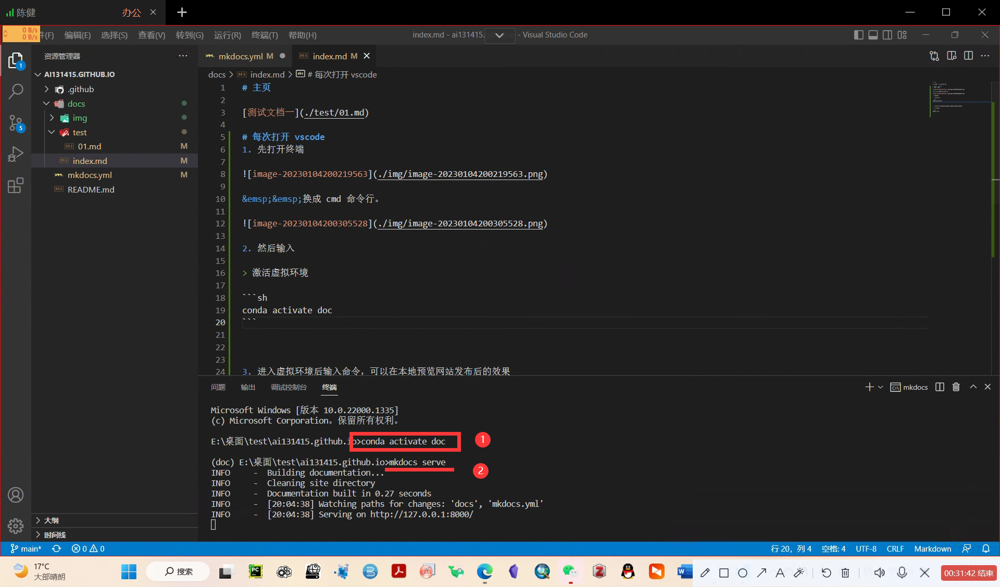

Home 主页¶ 测试文档一 每次打开 vscode¶ 先打开终端 换成 cmd 命令行。 然后输入 激活虚拟环境 conda activate doc 进入虚拟环境后输入命令，可以在本地预览网站发布后的效果 启动 mkdocs mkdocs serve  使用技巧¶ 比较常用的都在这个文档里了，ctrl+/ 可以对比查看源码和现在的显示效果进行对比。ctrl + C 就可以停掉 vscode 的程序。 !!记得激活